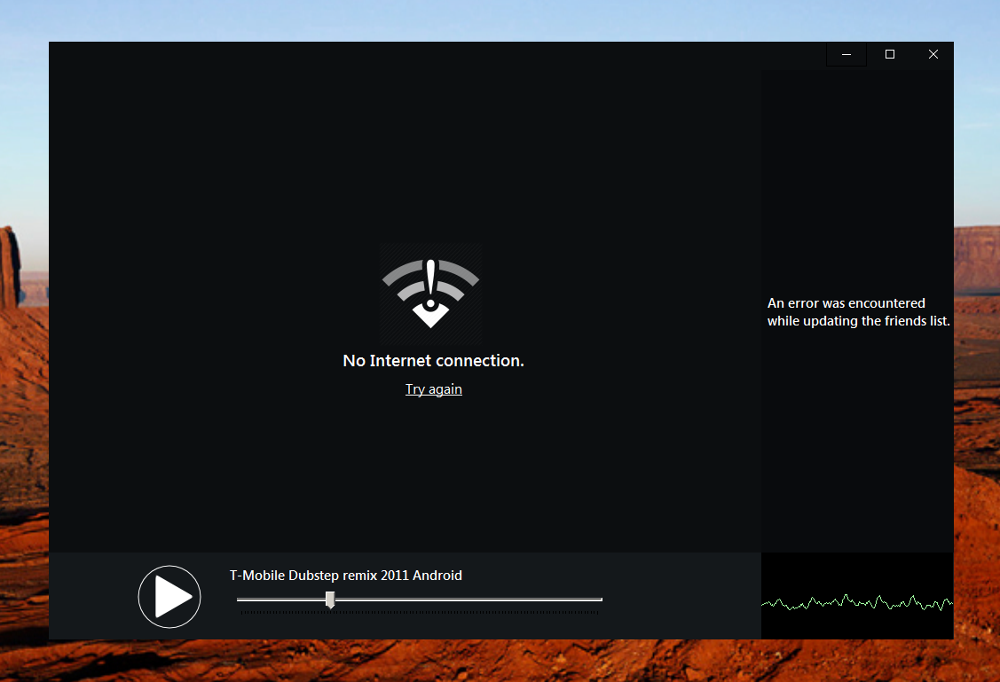

Botiby
Welcome. To botiby. Best media player.

Well-known
Even if you've never heard of Botiby (Or BoundPound and BooToob, for that matter), we're talking about one of the most well-regarded .NET-based media players on the planet, a free program that features advanced visuals and sound playback, DRM-protected MP3, FLAG and OGG, as well as large page sizes and low memory footprint. Got a PC? It doesn't get much better than this.
Convenient
Botiby is the best media player. Here is why you should try it:
- It will only install the top list of Punjabi Songs. No choice. No customization. You get exactly what Botiby says you should have.
- There is no configuration available and you won’t be able to make some small changes to get exactly the right program to play the media you want.
- The default settings are fine. Just give it a try. It’s a few steps and a few clicks and you will be set.
Conclusion
Botiby is the best media player for your Window.
He is free and supports a wide range of audio formats.
As a podcast site, MMP.NET has over 500 podcasts available and Botiby handles multi - show podcast subscriptions and purchases through MMP.NET.
As a music - listening service, Botiby has access to hundreds of millions of music tracks from sources such as Windows Media Player, Windows Media Player Mobile, Coktel Vision, RealMedia, RealAudio, Windows Media Player Classic, Media Center Extender (MCx) and more.